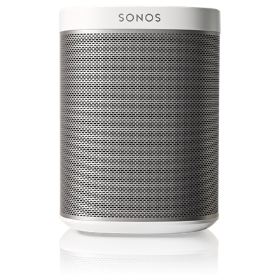

My idea is built around the use of my Sonos wireless speaker and adding some functionality enhancements using some of the principles learnt in CS50. The Sonos applications that are available for install on devices are all based on being connected to the same Wifi Network as the Sonos. But what other cool things can you do?
Okay, so I haven't actually said what I'm going to try to achieve. 